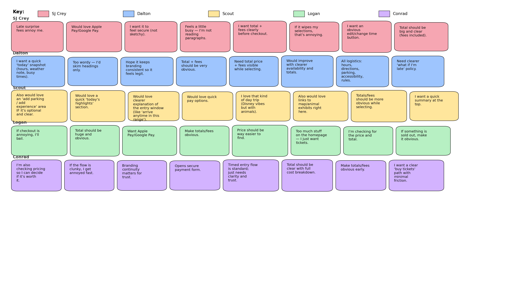
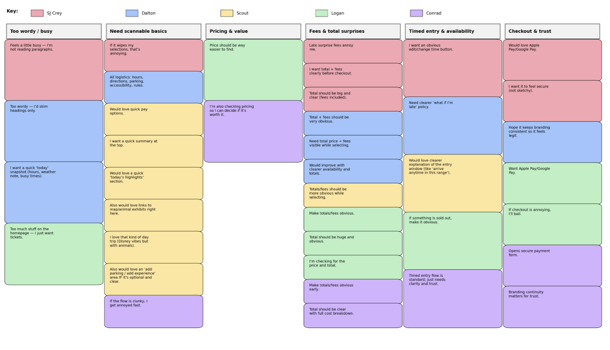
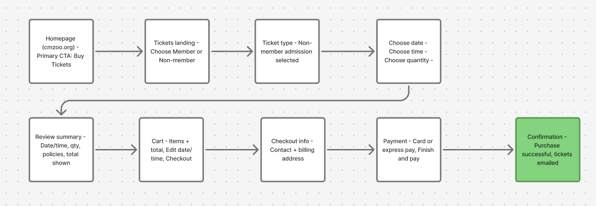
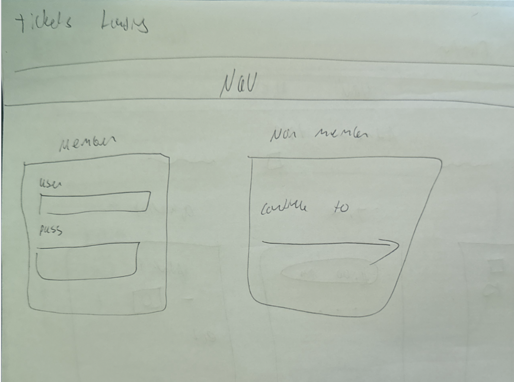
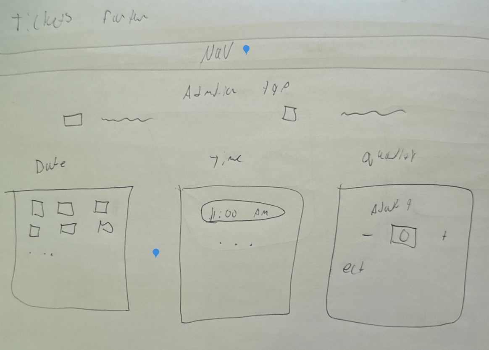
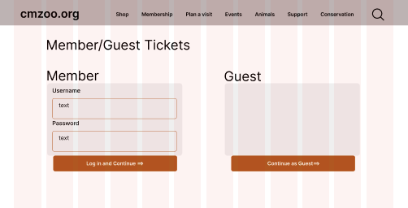
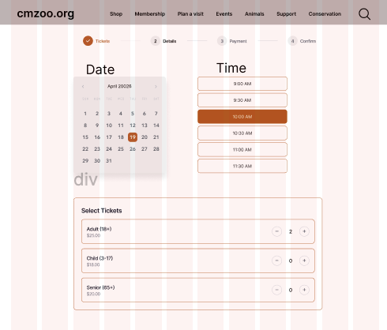
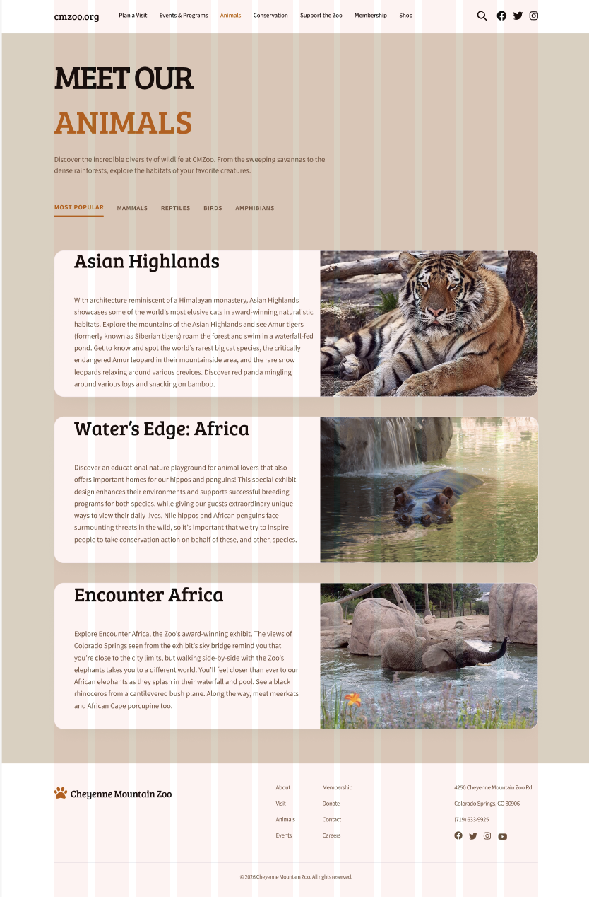

Cheyenne Mountain Zoo
Redesign
As part of User Experience Design 1 at CU Boulder, I redesigned key parts of the Cheyenne Mountain Zoo website. The original experience made it hard to find and buy tickets, especially with timed entry and multiple ticket types. My redesign focused on clearer hierarchy, simpler steps, and a rustic-modern look that still feels like a zoo.
I worked independently as the designer and UX researcher. As a designer, I created low, mid, and high fidelity prototypes in Figma. As a researcher, I ran usability tests on the current site and again between High-Fidelity V1 and V2.
Challenge
For the Cheyenne Mountain Zoo, I aimed to solve the flow of finding and purchasing tickets. The current experience was convoluted and often led to confusing ends. A limitation of this project was designing around the existing constraints for ticket purchasing, including membership status and different ticket types.
Research
Usability testing of current experience
Before redesigning, I conducted usability tests on the current ticket experience. I captured confusion points, moments of hesitation, and where users lost confidence. The largest pain points were how long it took to reach tickets and how unclear timed entry and pricing could feel.


Design
Problem statement
Non-member visitors need a fast, easy-to-scan way to select a timed ticket by date, time, and quantity and see the full price upfront in order to feel confident purchasing without confusion or surprise fees.
Task flow
After synthesizing the research, I organized a simplified ticket purchase flow. The goal was to minimize pages while keeping users oriented in their progress.

Low fidelity
In low fidelity, I focused on minimal layout and less text. I used quick sketches to lock in the structure of the flow and keep one clear screen per major process step.


Mid fidelity
In mid fidelity, I started treating the screens like a real product instead of a sketch. I built out repeatable components (cards, step indicators, summaries, and form blocks) and made sure the same patterns repeated across the full flow. This stage was where I tightened spacing and alignment, tested button hierarchy, and made the form layout feel clean and predictable. The goal was sleek and modern, but still calm and readable, without overly “poppy” UI.


High fidelity interactive prototype (V1)
For High Fidelity V1, I applied my rustic-modern visual direction and tested how the full flow felt with real UI decisions. I focused on readable typography, clear hierarchy, and restrained color so the experience stayed clean. This version made it obvious where the design still felt a little empty or “template-like,” and it gave me a strong base to improve clarity in V2.
Instructor feedback + user testing (V1 → V2)
- Timed entry needed one simple sentence so people know what the time means.
- Pricing breakdown should show earlier and stay consistent through checkout.
- Edit actions (date/time and quantity) should be more obvious and feel “safe.”
- Checkout and payment should feel more official with small trust cues.
- Animals page needed clearer browsing tools like search and basic filters.
- Layout consistency: align to grid and keep spacing consistent across screens.
- Hierarchy: make primary actions more noticeable and keep buttons consistent.
- Reduce awkward whitespace and keep sections balanced.
- Make text formatting consistent (headers, labels, body sizing).
- Improve overall fit and finish so the prototype feels complete.
- Color + contrast: restrained palette, readable text, and clear button states.
- Spacing: consistent spacing increments and consistent section rhythm.
- Typography: consistent header/body sizing, left alignment, clean labels.
- Buttons: consistent height + padding; primary vs secondary only differs by color.
- Inputs: match input height to buttons; consistent radius + left padding; clear labels.
- Components: consistent rounding, consistent icon sizing, predictable layouts.
Final High Fidelity (V2)
V2 was a refinement pass focused on completeness and confidence. I tightened spacing and alignment, clarified the timed entry explanation, and made pricing more consistent across the flow so the total never feels like a surprise. I also made edit actions more obvious so users can change date/time or quantity without feeling like they have to restart. Overall, I tried to keep the modern structure but add the small details that make the experience feel finished and more “zoo.”
Additional page: Animals
I included an Animals page as an additional screen. The goal was a clean, modern layout that becomes more browseable with clear sections, and later more visual content and browsing tools.

Evaluation and results
User testing process and pain points
Users said the flow was easy to follow and the layout felt clean, but it still wasn’t quite where I wanted it to be in terms of completeness and “zoo” feeling. The main feedback was that the screens need more content and personality so the site feels more rustic-modern and clearly connected to a zoo, not just a polished template. Timed entry was also slightly unclear, so users wanted one simple sentence explaining what the time means and what happens if you arrive early or late. Pricing came up as well, mostly wanting the breakdown shown sooner and labeled clearly so the total never feels surprising. Checkout and payment worked, but people wanted small trust cues and stronger consistency across the flow so it feels more official.
Updates
I kept the same modern structure and finished the missing pieces with small but important updates. I improved zoo-specific content and clarity with better image placement, clearer section headers, and small supporting copy. I made “Save and Edit Ticket" so users can change things without restarting.
Reflection
Future plans
If I had more time, I would redesign more “visit info” pages like parking and weather protocols, since those rely heavily on UX writing. I would also continue improving content density so the homepage feels complete without becoming overwhelming. Lastly, I would run another round of testing to confirm the V2 clarity updates work the way I intended.
Conclusion / takeaways
This project reminded me that the coolest creative option is not always the most usable. The ticket purchase flow needs to feel familiar, easy, and confidence-building for users. Iteration mattered a lot here, and small layout and clarity updates made the biggest difference.
Designer | Researcher | Analyst | Advocate